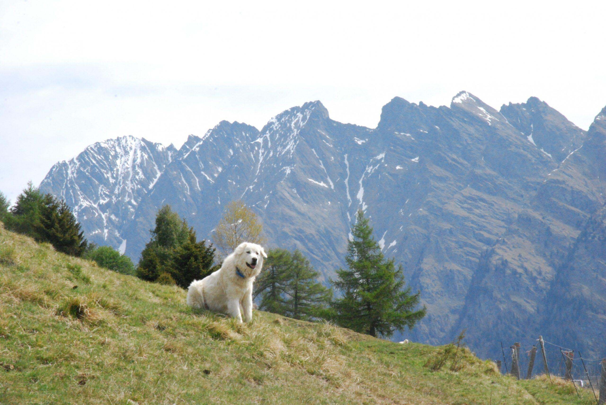

Du möchtest Landwirtinnen und Landwirte beim Herdenschutz unterstützen?
Dann freuen wir uns auf deine Anmeldung! Die Teilnahme an einem der angebotenen Ausbildungskurse wird vorausgesetzt.

Voraussetzungen
- Du bist mindestens 18 Jahre alt
- Du bist körperlich fit, belastbar und berggängig
- Du hast Interesse an Landwirtschaft und / oder grossen Beutegreifern
- Du hast eine gültige Haftpflichtversicherung
- Du bist bereit, mindestens 2 Einsatztage pro Jahr zu leisten